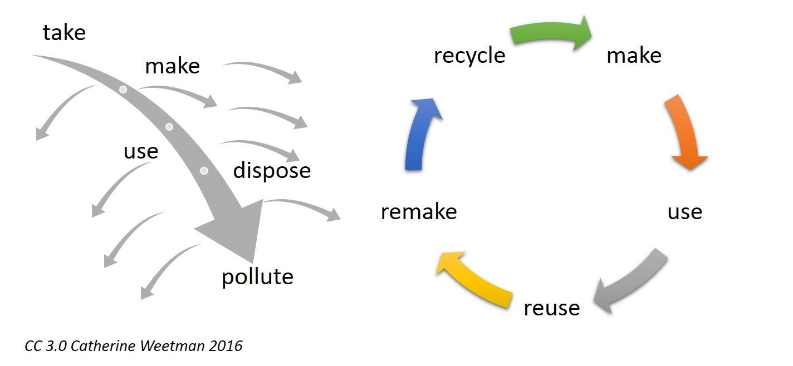

Consider the current economy: things are made, sold, bought, and are disposed of when they are finally deemed useless by the consumer. This economic model is what we call the linear model, which follows a 'make-buy-dispose' cycle. What happens after the product is disposed of is hardly considered, and the product cycle faces a dead end. The problem with this model is that if we keep dumping products, we are going to reach a point where we exhaust our scarce resources. The linear economy is highly unsustainable as it imminently leads to a future that runs out of resources. This is where the circular economy comes to play, it solves the problems of sustainability by altering the economy in such a way that resources are used to its maximum capability.
The Fundamentals
Simply put, the circular economy aims at maximizing a product's life to its full capability, and reviving dead products—which would typically be disposed of by the linear model—by bringing it back into the product life cycle, hence making the cycle more 'circular'. In essence, the circular model has no waste or accumulating landfill because they are constantly being fed back into the production cycle.
In essence, the circular model has no waste or accumulating landfill because they are constantly being fed back into the production cycle.
But how does the circular economy achieve this?
The first thing one might think of is recycling—which is correct, but is often the last measure after a series of other circular methods. Measures are also adopted such that products are first reused, and excessive consumption is reduced. And no, we aren't just talking about sensitive consumer behavior where consumers are expected to drastically change their consuming practices. We are also talking about an entire shift in business models, and changing the very ways things are made and sold.
Take the conventional linear business model for instance. Businesses take resources, make them into products, and sell them. After that, the product is no longer within the purview of the business. On the other hand, businesses in the circular economy are encouraged to take responsibility throughout the products' life cycle. According to the nature of the product, the supply chain is altered in a way that keeps it as a consumable for as long as possible. For example,a light bulb—instead of being offered as a product that is thrown away once it is deemed useless by the consumer—can be offered as a service that is leased by the business, ensuring that the light bulb is repaired and reused throughout the leasing period, and maximizing it's life as a result. This business model is known as the Product As A Service (or PaaS), and Philips is already starting to experiment with this model. Other models include the shared model, which involves the sharing of products such as vehicles; and the resource recovery model which centers around recycling and reviving disposed materials, and converting them into other usable products.
According to the nature of the product, the supply chain is altered in a way that keeps it as a consumable for as long as possible.
The consumer and the business won't be the only economic actors in the circular economy. For a transition to occur in the first place, the government needs to open the gates to such possibilities by imposing taxes, offering subsidies and making use of other financial tools to stimulate businesses and consumers to embrace and actively adopt circular measures.
Economic Potential
It is commonly regarded that sustainability only comes at a cost—but proponents of the circular economy say that this can't be far from the truth. The economic outlook of transitioning towards a circular economy is extremely positive, and this is slowly being proven by the European Union which is currently spearheading circular measures. The EU released a report in early 2019 which found that in the region, in 2016, circular activities such as repair, reuse or recycling generated almost €147 billion in value added. Adding to that, McKinsey in a 2015 report stated that circular-economy principles could not only benefit Europe environmentally and socially but could also generate a net economic benefit of €1.8 trillion by 2030.
How India Fits In
Studies have found that India could greatly accelerate its' growing economy by adopting circular measures; a study released in 2016 by Ellen McArthur Foundation predicts that India transitioning towards a circular economy could generate US$218 billion in 2030, and US$624 billion in 2050, amounting to 30% of the nation's GDP. The study observed that cost savings [owing to circular measures] could amount to 11% of current Indian GDP in 2030 and 30% in 2050.
India transitioning towards a circular economy could generate US$218 billion in 2030, and US$624 billion in 2050, amounting to 30% of the nation's GDP.
However, India is yet to take large-scale institutional measures in transforming its current predominantly linear economy to a circular one. With the impeding waste crisis and its ever aggravating water woes looming over India's long-run development, the answer to sustainable growth may very well be found within the heart of the circular ideology.